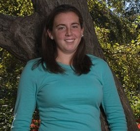

Hi I'm Shannon! This is my portfolio website for Coding Bootcamp. I'm eager to start a career in web development in the near future. Currently, I work in high school athletics. I've been around sports all my life- my Dad has been a teacher and coach for over 30 years. I believe my extensive background in sports has helped become the ultimate team-player in my professional career.
I am a 2010 graduate of Exeter High School, and from there I attended Endicott College in Beverly, Massachusetts. I graduated in 2014 with a BS in Sports Management. I was also a member of the women's basketball team.
I have a lot of interests outstide of my career. I'm a Disney fan, and I usually get to go every summer with my friends, with the exception of this year (thanks 2020!). I love home improvement projects and watching HGTV. Home Town is my favorite HGTV show and I hope to visit the Laurel Mercantile some day! I watch a lot (read: too much) TV. I love comedies, and Friends is my all-time favorite. I like The Office, Parks and Recreation, Brooklyn 99, New Girl, and many others I can't even think of right now. I'm not a huge movie watcher, but It's a Wonderful Life is one of my absolute favorites. I also really enjoyed being able to see Hamilton on Disney+ and I've been listening to the soundtrack ever since.
I have one younger brother, Brady, he's 26 and he is a Pharmacist in Portland, Maine. In 2018, Brady was diagnosed with Hodgkin's Lymphoma. He underwent 6 months of chemotherapy at Dana Farber Cancer Institute. He has been in remission since October 2018. Cancer really put things in perspective for me in terms of what is really important to me. I'm so lucky to have a super supportive family.